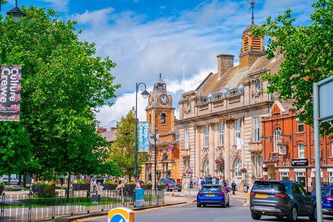

Backing Crewe town centre
Supporting local businesses, bringing empty units back into use and making the town centre a place people want to spend time in.
See the campaign →
Local priorities. Local action. A mayor who listens.
Campaign visits, local issues and upcoming activity — all in one place.
Demo content for the pitch — live campaign data can replace these example points.
Tell Ben what matters most to you locally. This is the kind of quick survey someone arriving from a Crewe ad or postcode search could complete in under a minute.
Three examples of how this page can surface live, local campaign activity rather than generic national messaging.
Supporting local businesses, bringing empty units back into use and making the town centre a place people want to spend time in.
See the campaign →Improving local connectivity and making sure major transport investment delivers for the people who live and work here.
See the campaign →New homes and development should come with the roads, schools, GP capacity and services communities need.
See the campaign →Local campaign news, events and opportunities from Ben's campaign.